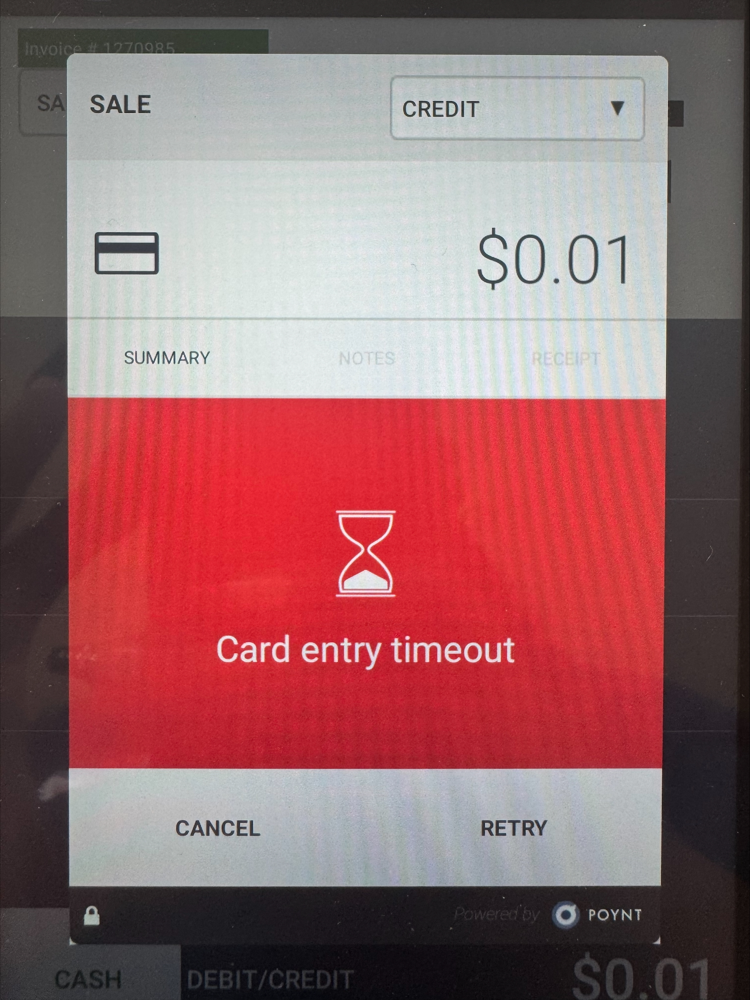
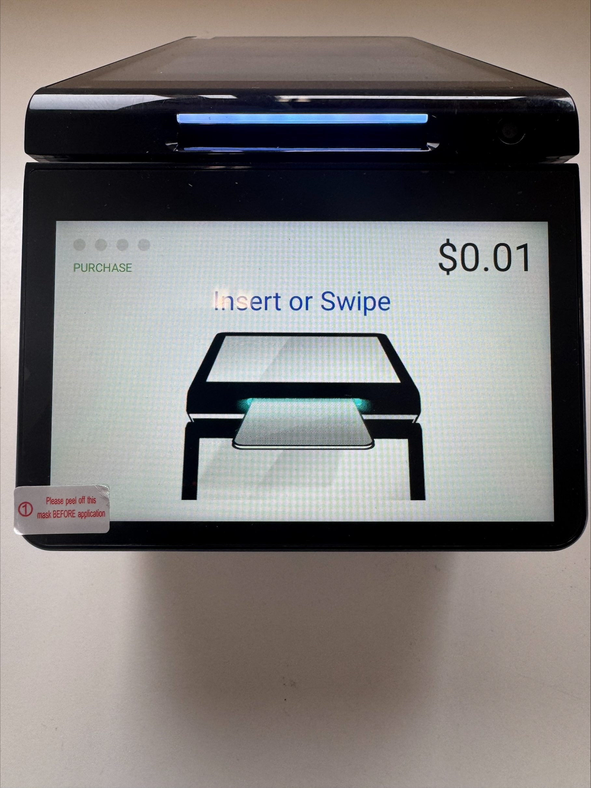
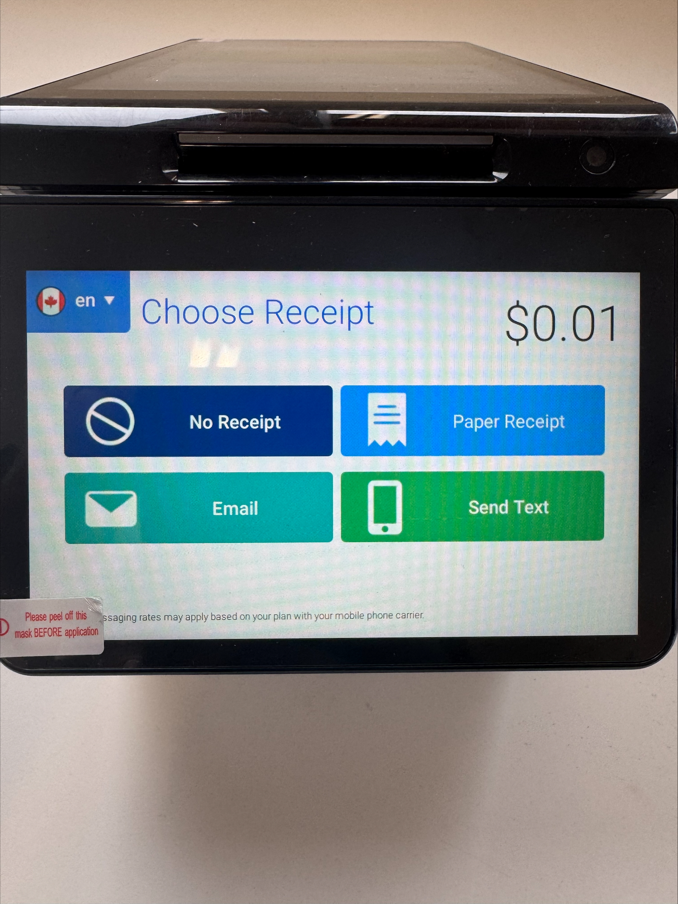

Introduction
The GoDaddy POS system provides an efficient way for businesses like JP Towing and Storage Ltd to manage sales and transactions. This guide will walk you through the steps to effectively use the system.
Steps to Use POS
-
Step 1: POS Homescreen
This is the homescreen you are greeted to once you power on the system
-
Step 2: Press the Terminal Icon to get into user selection
This gives you the option to get into selecting the user.

-
Step 3: Selecting User
Select your user name from the following options which will prompt you to put your password
-
Step 4: User password
Log in as the user with the password provided to you by the management.
-
Step 5: Service Amount
Enter the amount respective to ther service, if you entered the wrong amount you can clear the screen using "CLR" option on the screen and re-enter your amount
-
Step 6: Invoice Number
After entering the amount of the said service, navigate to the top right corner of the screen where there are 3 vertical dots on the right side of seach option. Press the three dots to find an invoice option, upon clicking the invoice option a floating window will pop up prompting you to enter the invoice number.

Note: The invoice number should be manually added for each and every purchase. For Example : If there was a transaction where the cutomer initially wanted to pay by debit and then decided to pay by cash and the Invoice number was not cleared it will show the same invoice number for the next transaction as well. In case it does happen contacting Amber will help resolve the situation.
-
Step 7: Payment Options
On the bottom left corner of the POS you will see the options for "CASH" and "DEBIT/CREDIT". We do not use cash option for cash payments and should be done as we used to do before with older pos systems. The "DEBIT/CREDIT" option is to be used for payments by "VISA" "MASTERCARD" and "AMERICAN EXPRESS"
Please use the below images for reference for DEBIT/CREDIT payments : Based on which option you select a floating window appears on the screen indicating the form of payment and a prompt to INSERT/SWIPE the card. The option manual entry should not be used by any employee as its aaginst our company policy.
-
Step 8: Account Selection
After customer inserts His/Her card into the POS system the employee side will show the prompt "Waiting for Account Selection" while the customer decides from what account they would be paying the charges.
If the payment cannot be completed after initiating the payment process , the system will pull up a timeout message "CARD entry timeout" message. we can retry the payment or cancel the transction at this step.

-
Step 9: Payment Confirmation
Once the payment is completed we get a message on the employee side of the screen "REMOVE CARD" and the system will prompt a floating window which has options for SUMMARY, HISTORY, NOTES and RECEIPT. When we press the receipt option an other floating window prompts up with options "MERCHANT" and "CUSTOMER". To get the merchant and customer copy we need to select the appropriate option.
Note: Pressing the Done button before printing the merch/customer receipts will end the transaction and you won't be able to print receipts but for the latest transaction if you could not print the receipt there is an option to reprint the last transaction. If you want to print receipts for payements other than the last transaction you should contact Amber Immediately and notify her of this situation.
Customer
-
Step 1: Inserting Card
Customer inserts their card into the card reader and selects the payment option from the screen

-
step 2: After Payment
After the payment is completed,the screen will prompt you to remove the card followed by floating window which has options for how the customer wants to receive the receipt

-
step 3: Receipt
If the option of "Paper Receipt" is selected from the type of receipt options above, a receipt print is to be collected from the front-bottom of the POS system
Support
If you need assistance while using the POS system, contact Amber via email or Teams for troubleshooting and FAQs.